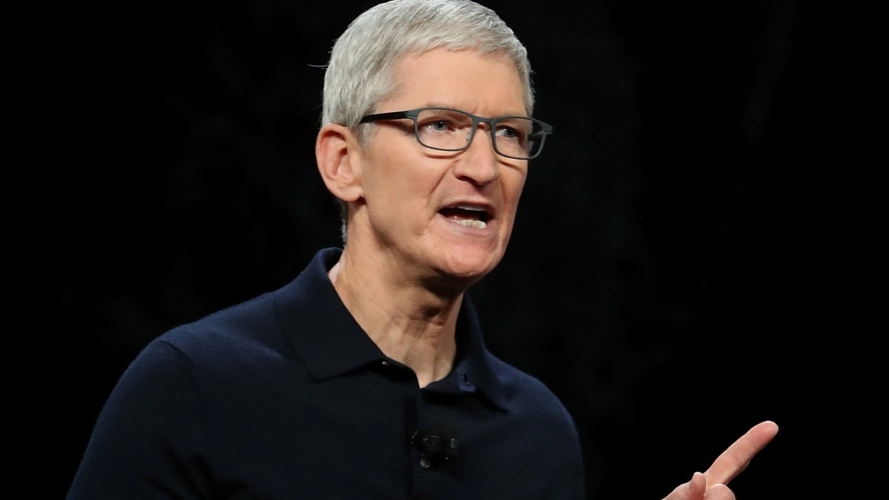
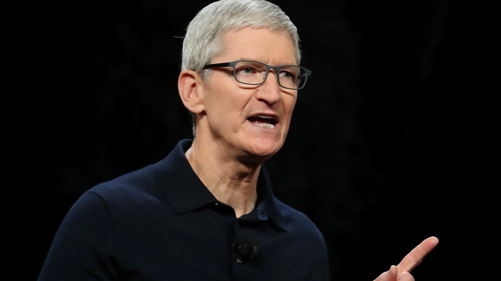

Timothy D. Cook, geboren op 1 november 1960, trad in augustus 2011 officieel aan als CEO van Apple Inc. Hij nam de positie over van medeoprichter Steve Jobs, die wegens gezondheidsredenen aftrad en kort daarna overleed. Tim Cook had al een lange geschiedenis bij Apple voordat hij CEO werd. Hij trad in 1998 in dienst bij het bedrijf als Senior Vice President voor Worldwide Operations, waar hij verantwoordelijk was voor de wereldwijde supply chain en productie. Onder zijn leiderschap transformeerde Apple's supply chain en productieprocessen, wat bijdroeg aan het succes van producten zoals de iPhone en iPad. Als CEO heeft Tim Cook het leiderschap en de visie van Apple voortgezet. Hij heeft zich gericht op het versterken van Apple's groei in internationale markten, de uitbreiding van Apple's dienstenaanbod en het bevorderen van duurzaamheid en ethiek binnen het bedrijf. Onder zijn leiderschap heeft Apple verschillende nieuwe producten en diensten geïntroduceerd, waaronder de Apple Watch, AirPods, Apple Music en Apple TV+. Tim Cook staat bekend om zijn nadruk op privacy en gegevensbeveiliging, en hij heeft Apple gepositioneerd als een voorvechter van digitale privacy. Hij heeft ook aanzienlijke aandacht besteed aan maatschappelijke kwesties en duurzaamheid, waarbij Apple zich inzet voor het verminderen van de impact van het bedrijf op het milieu. Het is echter belangrijk op te merken dat de situatie kan veranderen na januari 2022, dus voor de meest recente informatie over de CEO van Apple, raad ik aan om online bronnen of nieuwsbronnen te raadplegen.